- Put the 1/3 cup of butter in a bowl and pelt in the microwave.
- In the mixing bowl, mash the bananas and add the melted butter. The bananas can be left a little chunky for consistency.
- Add the salt, baking soda, sugar, vanilla extract. Mix as we add each of the ingredients.
- Add the egg and lightly beat it in the mix.
- Add the flour. mix well. Use the silicone spatula to unstick the flour from the sides of the bowl.
- Add the chocolate chips and the crushed walnuts and mix well.
- Use a little bit more of melted butter to spread on the loaf pan so that the dough doesn't stick. Pour the mix in there and bake at 350 degrees Fahrenheit for 1h.
- Take ou of the oven and make sure it's cooked by sticking a fork through it. If it comes out clean, it's ready.
- Take out of the pan and enjoy!.
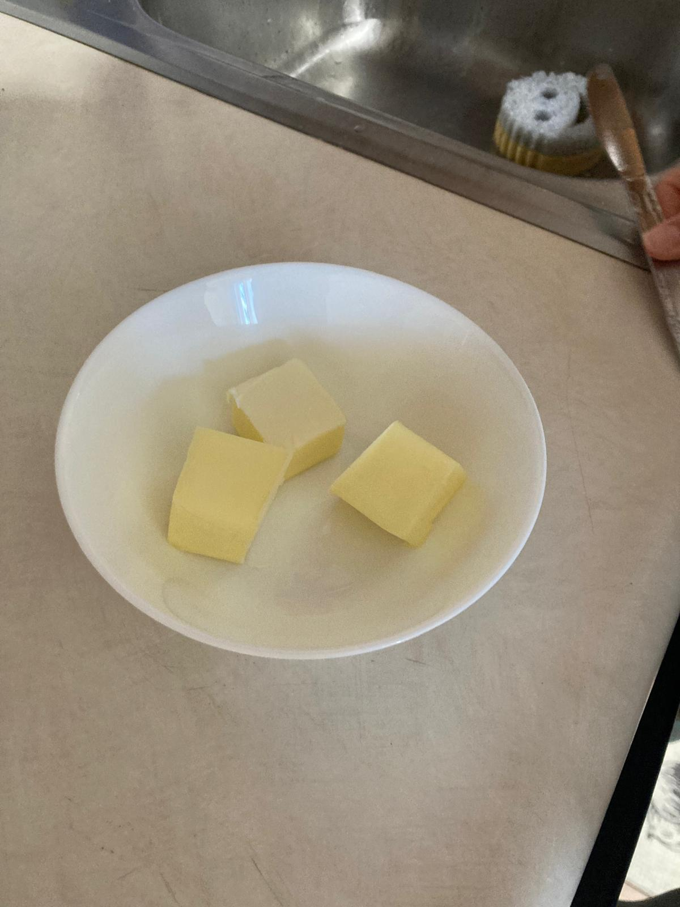
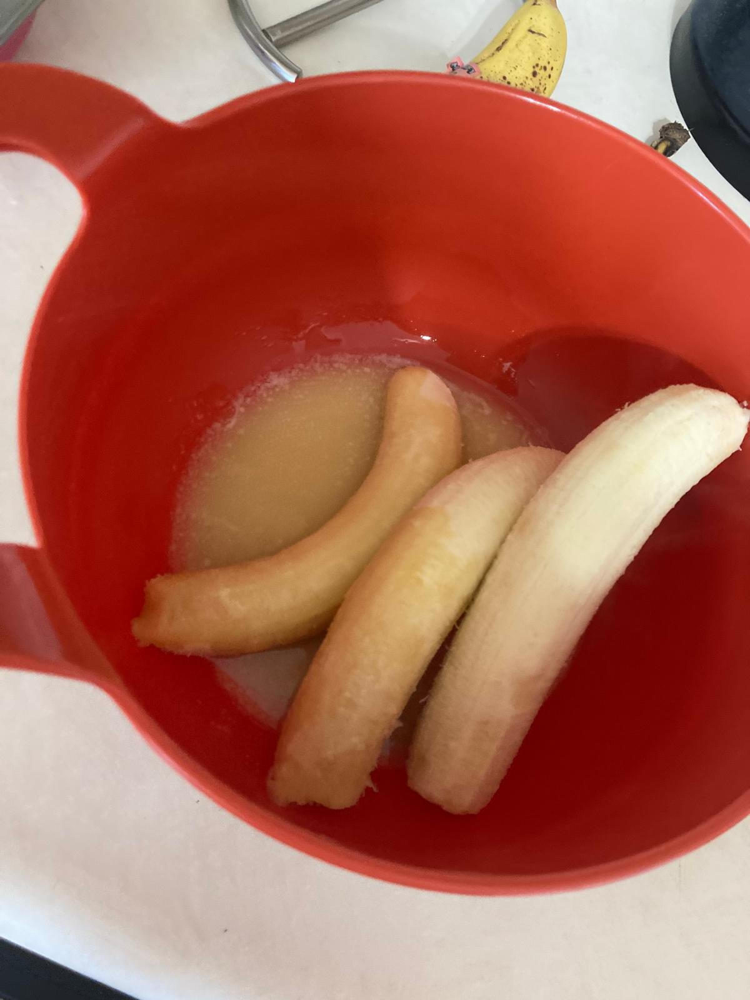
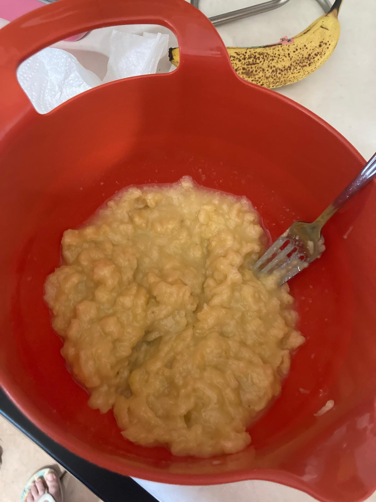
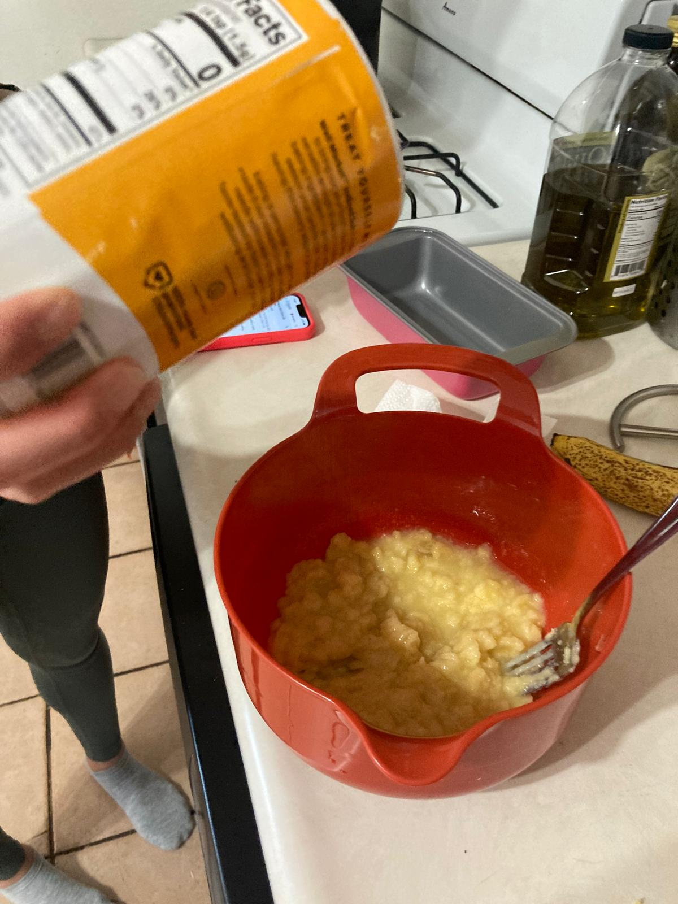
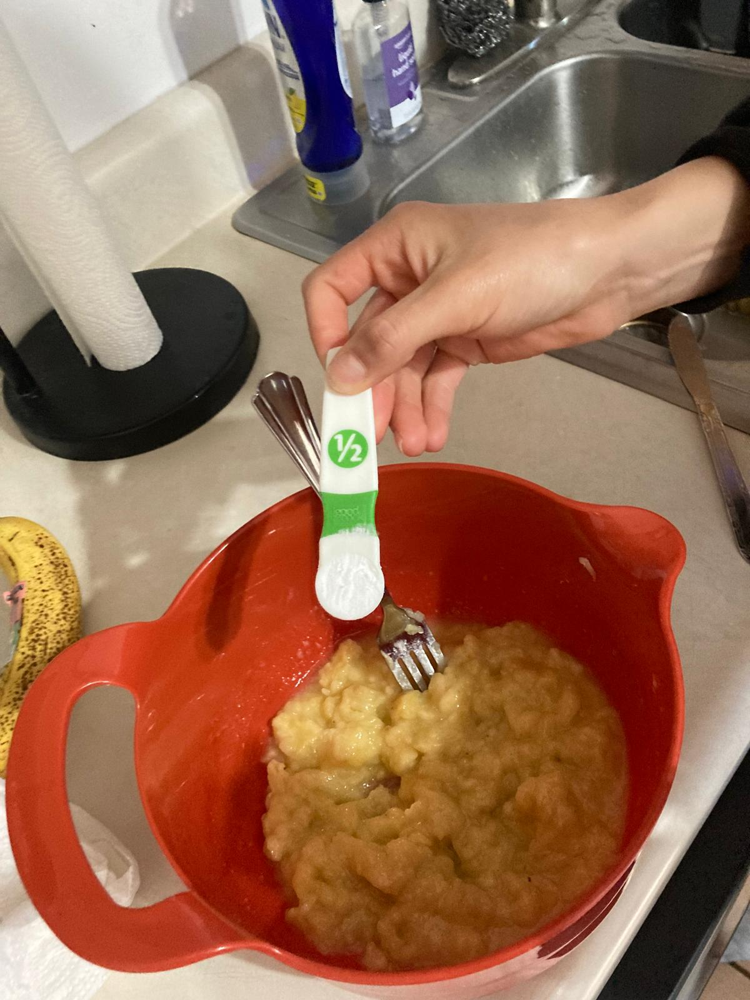
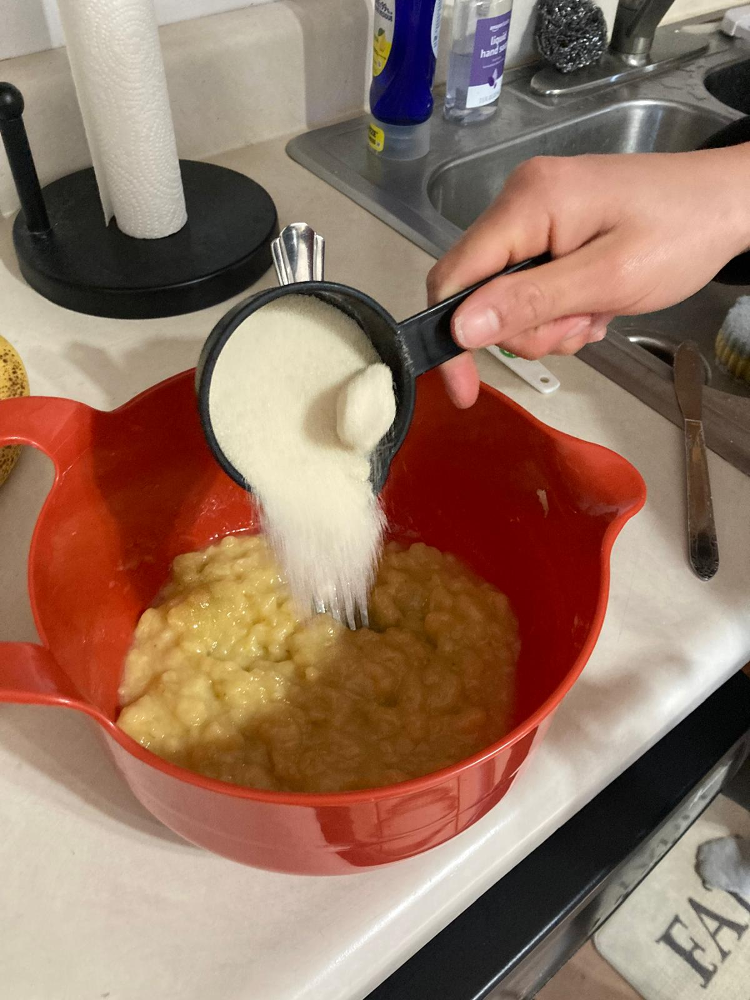
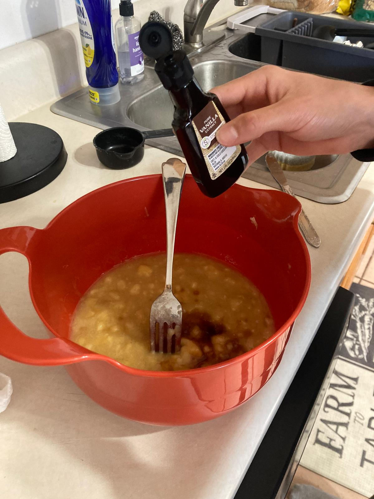
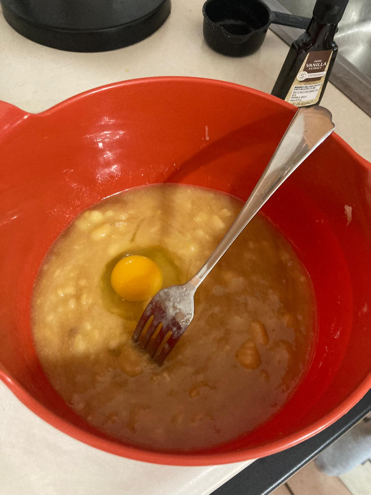
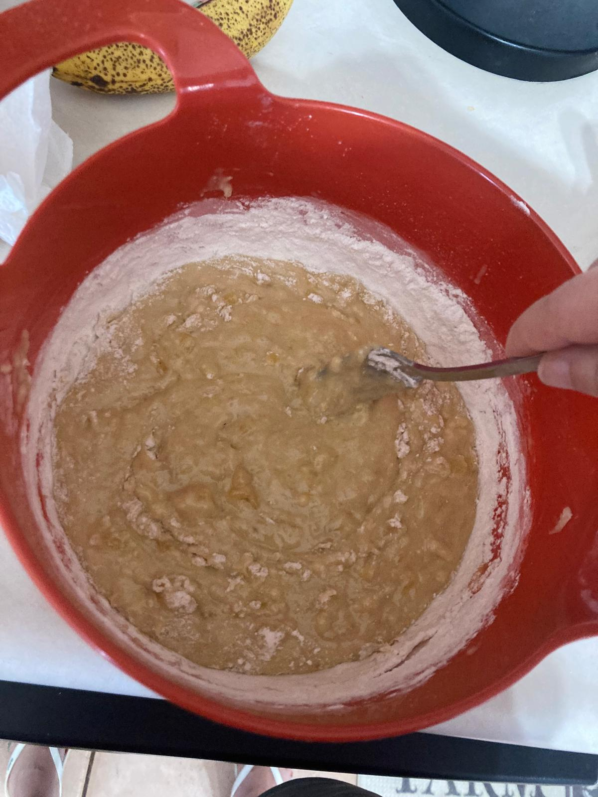
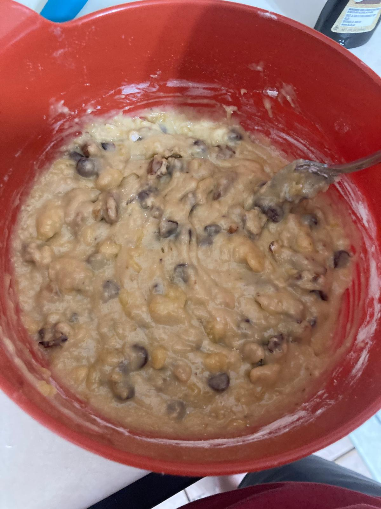
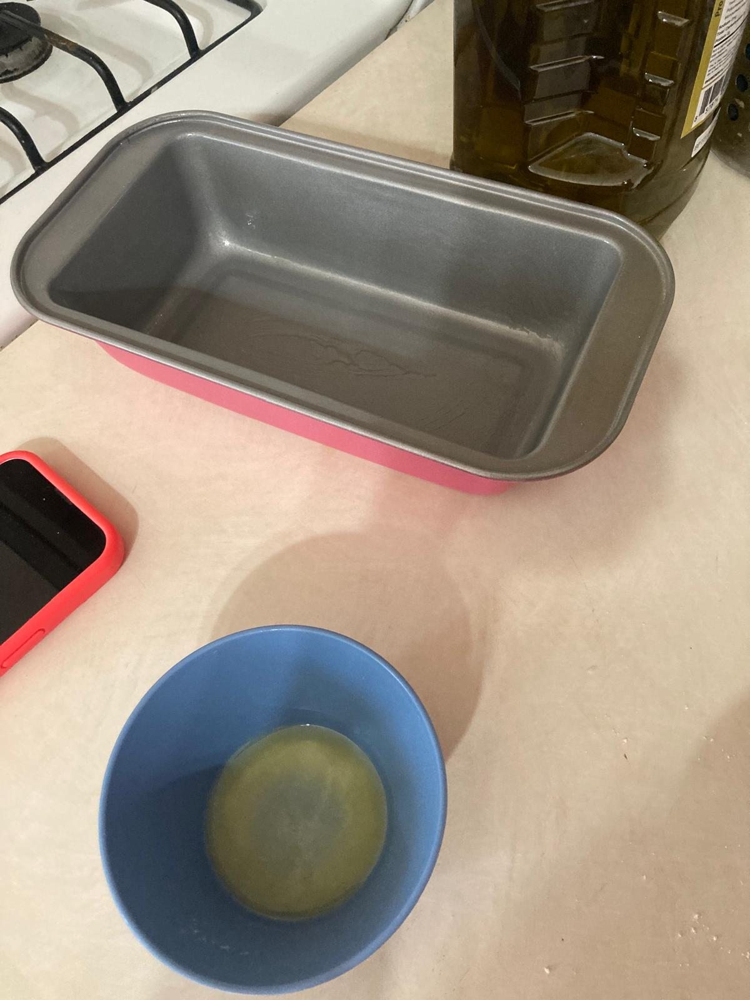
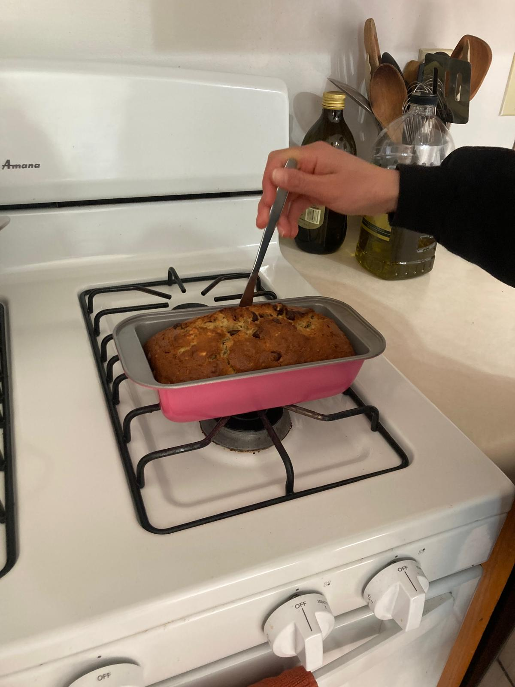
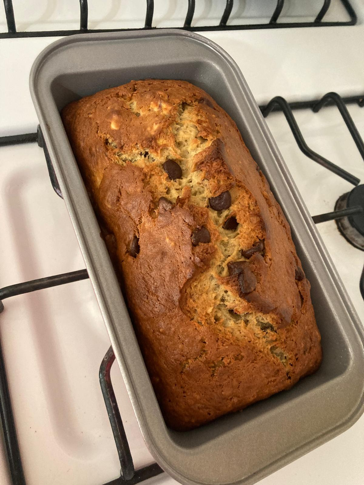